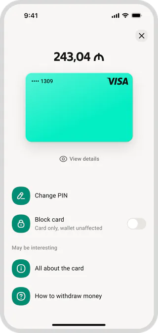
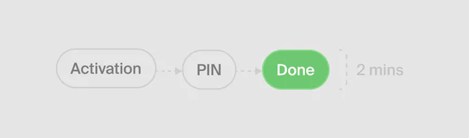
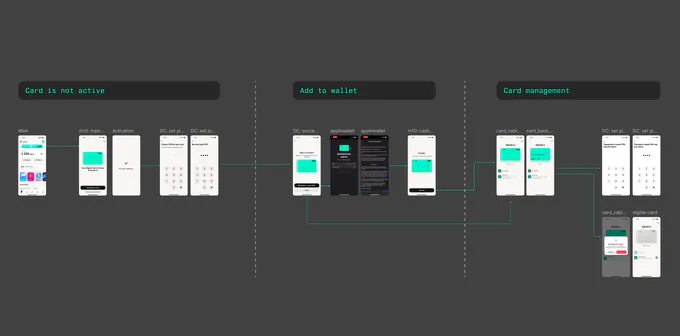
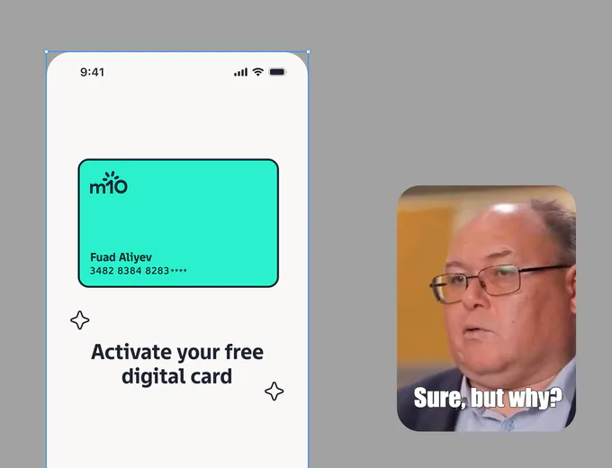
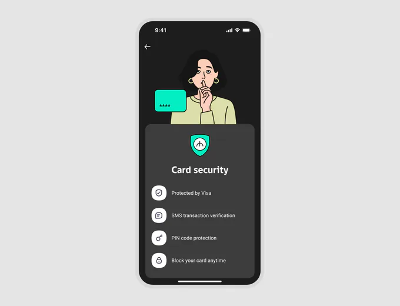
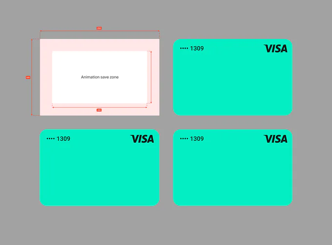
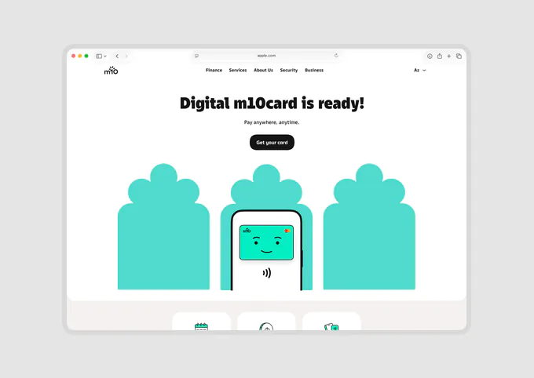
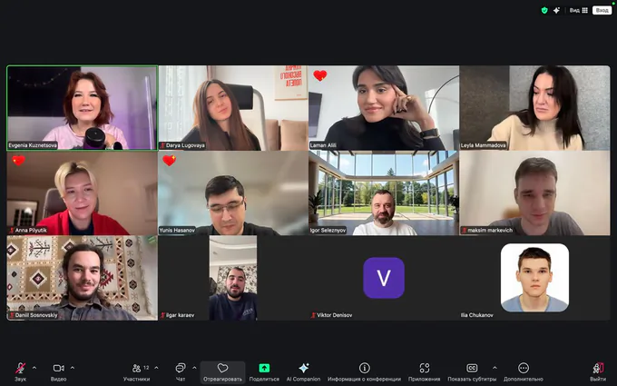

Launching the first
Digital Card in m10
m10 is an Azerbaijani e‑wallet with 700K MAU. The app lets users transfer money and pay for services and purchases with a QR code. But payment options are limited: you can’t use the wallet offline or abroad, in‑store payments work only at partner merchants, and online purchases aren’t available.
Goal
Design and launch the first m10 digital card to remove these limitations and give users more freedom in how they pay.

My role
I designed the key user flows—from getting the card to managing it in the app. Together with a UX researcher, I tested early concepts, worked with the creative team on the visual concept, and helped prepare the launch.
01 / Design and research
At the start, we defined the scope of the first version and the security requirements. Since the card was issued only in digital form and linked to the existing wallet, we didn’t need separate application forms, delivery, or a visit to the bank.
This let us cut issuance down to a few steps, so users could get the card quickly and start using it right away.

I researched  how other financial apps solve this and built the first prototype of the activation flow and the card management screen.
how other financial apps solve this and built the first prototype of the activation flow and the card management screen.

Together with the UX researcher, we tested the flow with users and found several problems…
People didn’t fully understand the value of a digital card: they didn’t know where they could pay with it or what new possibilities it opened up. They also had questions about how the shared balance with the wallet worked and how safe the card was to use.

Based on the test results, we moved the key benefits onto the activation screen.

We also added a separate in‑app landing page with detailed information about the card.
This kept issuance short while giving more information to those who needed it.

02 / Emotional design
Alongside the UX work, we explored a visual concept for the card together with the creative team. We wanted to give the product more personality and make interacting with it more emotional. That’s how the card character came about, with its own set of emotions and animations.
Instead of the usual “Activate card,” we suggested waking it up: before issuance the card sleeps , wakes up once it’s issued, and changes its expression from time to time on the card screen.

03 / Integration and launch
We placed the card on the home screen next to the wallet so users would notice the new feature sooner and see its connection to the shared balance.
We also designed a custom transition animation into the card screen to make interacting with the card more fun.
To introduce the new product to our audience, we prepared communications for different user segments together with the marketing team.
I also built a landing page on Webflow , where people could learn more about the card and its features.

Results
In the first two weeks after launch:
- 51.8K cards issued
- 500K+ transactions
- $3.4M+ in transaction volume
We hit  our target of 50,000 cards a month in less than two weeks.
our target of 50,000 cards a month in less than two weeks.
And here’s our team celebrating the first results .

One more thing
During research, we found that users saw blocking a card as an irreversible action and were afraid of losing access to their money.
I suggested rethinking the approach itself: instead of blocking, use freezing —a temporary state the card can be restored from at any time.
The solution didn’t make it into the first MVP, so we came back to it after launch: we reworked the copy and prepared a dedicated animation. The concept was approved at the Bir ecosystem level, with plans to use it in other products.